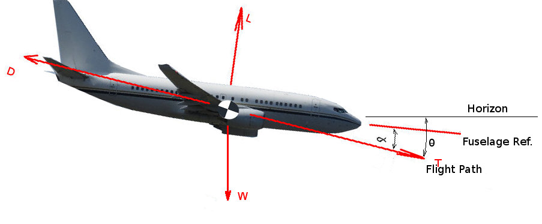

CLIMB AND DESCENT
Climb Performance
Once the aircraft has left the ground and a constant speed climb established, then climb performance can be simply calculated using a balance of the forces acting on the climbing vehicle.
The vehicle is assumed to be climbing at a constant angle ($θ$) and at a constant forward velocity ($V$) with a climb rate of $dh\/dt$
The balance of forces in the direction perpendicular to aircraft flight (z-wind-axis) will give :
$$L=W\cos(θ)$$
The balance of forces in the direction parallel to the aircraft flight path (x-wind-axis) will give :
$$T-D=W \sin(θ)$$
Normal aircraft climb at relatively small angles so making the small angle assumption that
$\sin(θ) ≈ θ$ and $\cos(θ) ≈ 1$ gives the following prediction of climb angle,
$$θ≈\sin(θ)={T-D}/W$$
Then by observing the relationship between climb angle, climb rate and flight velocity,
$$\sin(θ)={dh\/dt}/V$$
hence
$${dh}/{dt}={(T-D)V}/W$$
The use of these equations in a numerical scheme is relatively straight forward. At a given aircraft weight, altitude and flight speed it should be possible to estimate the current Thrust ($T$) being produced and the current Drag ($D$) (see previous section on calculation of Thrust and Drag).
The difference between thrust and drag at the specified flight condition can hence be used to calculate climb angle and climb rate for the aircraft. Clearly if $T=D$ then the aircraft is not climbing or descending but is in level flight. Also a obvious consequence is that if $T < D$ then the aircraft must be descending.
This combination of terms : $P_s={(T-D)V}/W $ is quite important in the evaluation of aircraft performance. It is given the name Specific Excess Power ( $P_s$ ). The fact that the terms have velocity times force units involved makes this a term in power; excess power, because of the assumption that $T × V$, power available from engines, is greater than $D × V$, power required to overcome energy loss due to motion. The $P_s$ term is denoted as Specific since the power terms are divided by the weight of the vehicle so that it is not being used in absolute terms but relative to the weight of the vehicle.
For this steady flight analysis Specific Excess Power will create a climb rate but for dynamic motion of the aircraft it can be used to climb, accelerate or turn. This will be covered in later sections.
Investigation of the Specific Excess Power term over a range of flight speeds in the initial climb at sea level conditions can be used to find important results. Using the above simple equations in a spreadsheet for example can be used to predict the flight speed to use that will maximise the climb rate or the climb angle (Note: These two optima may not occur at the same flight speed).
A Sea Level Climb Performance Spreadsheet can be obtained here to help with the estimations.
Descent
Descent from altitude to sea level is a similar but not identical problem to climb. It is most easily analysed by looking at a force balance for a steady decent but the optimum solution for descent is not the same as that for climb so the equation will be used to find different solutions in this application.

Taking the balance of forces along the flight path gives,
$$T-D+W\sin(θ)=0$$
Taking the balance at right angles to the flight path gives,
$$ L=W\cos(θ)$$
For descent the objective is to firstly minimise fuel usage and at the same time maximise the distance travelled. This is a different approach compared to climb where the aim was to optimise climb rate. To minimise fuel, the Thrust should be reduced to a minimum, so in this case we can assume $T ≈ 0$. To maximise distance travelled then the aim will be to have the smallest descent angle with no thrust, that is, to find the best glide angle.
If the descent angle is assumed to be small then $\sin(θ)=θ$ and $\cos(θ)=1$
so that
$$L=W\text" and "\sin(θ)=θ=D/W=1/{(L\/D)}$$
Hence the optimum for descent will be to use a velocity that maximises the $L\/D$ of the vehicle.